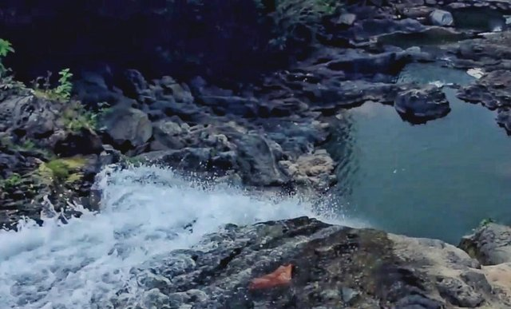

keunikan yang ada dibireuen
beranda
tentang kami
layanan
geleri
kontak
keunikan kabupaten bireuen
Air Terjun Ceuraceu Lokasi: Desa Samagadeng, Pandrah, Bireuen

(sumber foto:https://tempatwisataseru.com/ )